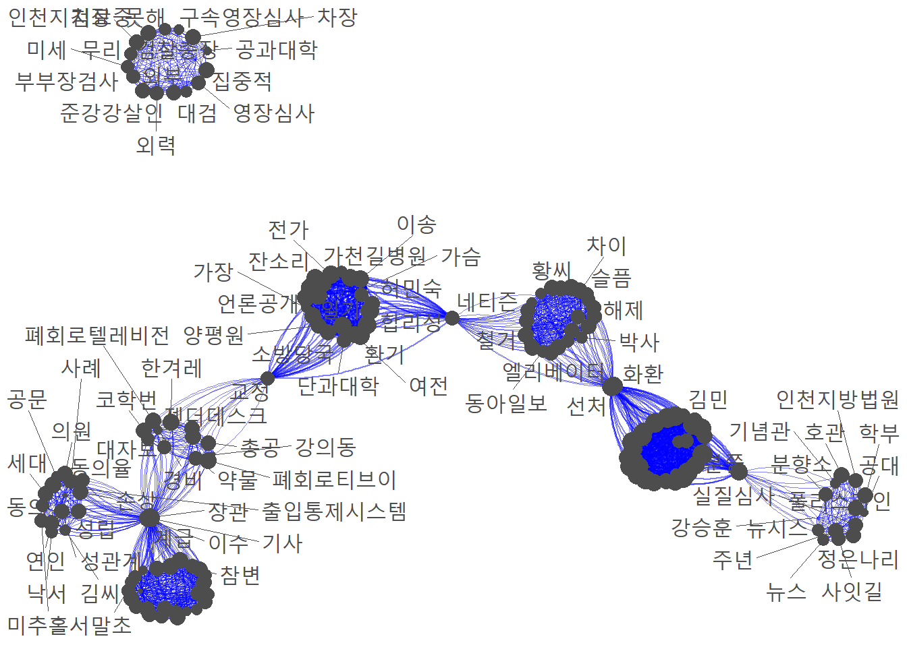

dim(inha)[1] 362 4지난 2022년 7월 15일, 인하대학교 재학생 강간살인 사건의 언론 재현 수준을 분석한 보고서이다.
먼저 해당 사건 발생일 기준 3개월 간의 뉴스 기사 데이터를 수집하였다.해당 기간 이후의 기사는 대체적으로 본 사건과 관련이 없는 기사가 많았다. 이에, 총 3개월 치의 기사만 수집하였다.
기사는 빅카인즈(BigKinds)를 통해 수집하였다. 포털 사이트의 기사를 크롤링을 하는 방법도 있으나, 포털 뉴스 특성상 기사가 중복된 내용이거나, 지나친 편향성을 지닌 기사가 많아, 해당 내용은 본 분석에서 제외하였다.
또한 언론의 어젠다를 분석하는데 있어 주요 신문사들의 보도를 보는 것이 좋다고 판단하여 총 10개의 언론사(“세계일보” “문화일보” “경향신문” “동아일보” “한겨레” “서울신문” “한국일보” “중앙일보” “국민일보” “조선일보”)의 기사를 선별하여 데이터를 수집했다.
추가로, 7월 15일부터 10월 15일의 기간에 보도된 기사 중, 해당 사건과 관련 없는 기사를 필터링하였다. 기사 필터링은 Python 환경에서 진행하였으며, 해당 내용 자체만으로도 내용이 많아, 별도의 문서에서 다루기로 하였다.
분석에 사용된 총 기사의 갯수는 다음과 같다.
dim(inha)[1] 362 4우선 먼저 등장한 단어는 총 4190개가 등장하였다.
inha %>%
select(키워드) %>%
rowid_to_column() %>%
unnest_tokens(
input = "키워드",
output = "단어") %>%
filter(nchar(단어) >= 2) %>%
count(`단어`, sort = TRUE) -> words
dim(words) #4190[1] 4190 2상위 15개의 주요 단어를 추출한 결과는 다음과 같다.
words %>% head(15) #counter# A tibble: 15 × 2
단어 n
<chr> <int>
1 인하대 1551
2 경찰 1244
3 사건 1157
4 혐의 1143
5 피해자 1046
6 건물 973
7 성폭행 963
8 추락 943
9 캠퍼스 704
10 사망 633
11 발견 548
12 대학 493
13 여성 484
14 학교 476
15 조사 446언론사 별 보도 빈도는 다음과 같다.
inha %>%
group_by(언론사) %>%
tally() %>%
arrange(desc(n)) %>% gt() %>% tab_header('언론사 별 보도 빈도') %>%
cols_label(언론사 = "언론사", n = '빈도')| 언론사 별 보도 빈도 | |
| 언론사 | 빈도 |
|---|---|
| 세계일보 | 81 |
| 서울신문 | 45 |
| 국민일보 | 40 |
| 조선일보 | 36 |
| 동아일보 | 35 |
| 중앙일보 | 35 |
| 경향신문 | 26 |
| 한겨레 | 24 |
| 한국일보 | 24 |
| 문화일보 | 16 |
inha %>%
group_by(언론사) %>%
tally() %>%
arrange(desc(n)) %>% gt() %>% tab_header('언론사 별 보도 빈도') %>%
cols_label(언론사 = "언론사", n = '빈도')| 언론사 별 보도 빈도 | |
| 언론사 | 빈도 |
|---|---|
| 세계일보 | 81 |
| 서울신문 | 45 |
| 국민일보 | 40 |
| 조선일보 | 36 |
| 동아일보 | 35 |
| 중앙일보 | 35 |
| 경향신문 | 26 |
| 한겨레 | 24 |
| 한국일보 | 24 |
| 문화일보 | 16 |
보도 빈도만 두고 본 결과, 3개월의 기간 동안 해당 어젠다를 중점적으로 다룬 언론사는 세계일보였다. 그 외에는 전반적으로 비슷한 수준의 보도를 진행하였다.
이전에 기사 필터링을 진행하여 나타난 군집들의 양상을 근거로 언론사들의 보도 스탠스를 유추하여 보았다.
군집 별 기사 빈도는 다음과 같다.
inha %>%
group_by(군집) %>%
tally() %>%
arrange(desc(n)) %>% gt() %>% tab_header('군집 별 기사 빈도') %>%
cols_label(군집 = "군집", n = '빈도')| 군집 별 기사 빈도 | |
| 군집 | 빈도 |
|---|---|
| 인하대 사건 조사보도 | 103 |
| 가해자 재판 | 75 |
| 인하대 사건 그 이후 | 59 |
| 젠더 이슈 | 42 |
| 가해자 체포 | 40 |
| 학교 측 가해자 징계 | 29 |
| 리멤버 0715 | 14 |
이들 중 언론사의 어젠다 설정 방향을 유추할 수 있는 군집인 “인하대 사건 조사보도”, “인하대 사건 그 이후”, “젠더 이슈”를 추출하여 언론사 별 보도 비율을 확인하였다.
먼저 인하대 사건 조사보도 군집에 해당하는 기사들의 언론사 구성 비율이다
inha %>%
filter(군집 == '인하대 사건 조사보도') %>%
group_by(언론사) %>%
tally() %>%
arrange(desc(n)) %>%
ggplot(aes(x = "", y = n, fill = 언론사))+
geom_bar(width = 1, stat = 'identity', color = "white")+
theme(axis.text.y = element_blank(),axis.ticks = element_blank(), legend.text = element_text(size = 9))+
geom_text(aes(label = paste(round(n/sum(n)*100, 2),"%")),
position = position_stack(vjust = 0.6),
check_overlap = TRUE,
color = 'white')+
coord_polar('y', start = 0)+
xlab("")+
ylab("")
그 다음 인하대 사건 그 이후 군집에 해당하는 기사들의 언론사 구성 비율이다
inha %>%
filter(군집 == '인하대 사건 그 이후') %>%
group_by(언론사) %>%
tally() %>%
arrange(desc(n)) %>%
ggplot(aes(x = "", y = n, fill = 언론사))+
geom_bar(width = 1, stat = 'identity', color = "white")+
theme(axis.text.y = element_blank(),axis.ticks = element_blank(), legend.text = element_text(size = 9))+
geom_text(aes(label = paste(round(n/sum(n)*100, 2),"%")),
position = position_stack(vjust = 0.5),
check_overlap = TRUE,
color = 'white')+
coord_polar('y', start = 0)+
xlab("")+
ylab("")
마지막으로 젠더 이슈에 대한 기사들의 언론사 구성 비율이다.
inha %>%
filter(군집 == '젠더 이슈') %>%
group_by(언론사) %>%
tally() %>%
arrange(desc(n)) %>%
ggplot(aes(x = "", y = n, fill = 언론사))+
geom_bar(width = 1, stat = 'identity', color = "white")+
theme(axis.text.y = element_blank(),axis.ticks = element_blank(), legend.text = element_text(size = 9))+
geom_text(aes(label = paste(round(n/sum(n)*100, 2),"%")),
position = position_stack(vjust = 0.5),
check_overlap = TRUE,
color = 'white')+
coord_polar('y', start = 0)+
xlab("")+
ylab("")
inha.words %>%
slice_max(n, n = 10) %>%
ggplot(aes(x = n, y = reorder_within(단어, n, 언론사), fill = 언론사)) +
geom_col(show.legend = F) +
facet_wrap(~ 언론사, scales = 'free') +
scale_y_reordered()+
xlab("")+
ylab("")
| 언론사 별 단어 빈도 | |||||||||||||||||||
| 경향신문 | 국민일보 | 동아일보 | 문화일보 | 서울신문 | 세계일보 | 조선일보 | 중앙일보 | 한겨례 | 한국일보 | ||||||||||
|---|---|---|---|---|---|---|---|---|---|---|---|---|---|---|---|---|---|---|---|
| 단어 | 빈도 | 단어 | 빈도 | 단어 | 빈도 | 단어 | 빈도 | 단어 | 빈도 | 단어 | 빈도 | 단어 | 빈도 | 단어 | 빈도 | 단어 | 빈도 | 단어 | 빈도 |
| 사건 | 76 | 인하대 | 170 | 인하대 | 133 | 경찰 | 60 | 인하대 | 180 | 인하대 | 416 | 인하대 | 165 | 인하대 | 151 | 사건 | 147 | 인하대 | 106 |
| 인하대 | 70 | 경찰 | 162 | 혐의 | 120 | 인하대 | 56 | 경찰 | 167 | 경찰 | 327 | 경찰 | 102 | 경찰 | 131 | 피해자 | 107 | 사건 | 81 |
| 혐의 | 68 | 혐의 | 144 | 경찰 | 118 | 혐의 | 56 | 혐의 | 144 | 혐의 | 302 | 피해자 | 102 | 사건 | 120 | 인하대 | 104 | 피해자 | 79 |
| 경찰 | 65 | 피해자 | 137 | 피해자 | 107 | 성폭행 | 50 | 추락 | 143 | 건물 | 298 | 혐의 | 100 | 혐의 | 111 | 대학 | 84 | 건물 | 59 |
| 피해자 | 59 | 건물 | 122 | 추락 | 95 | 건물 | 48 | 건물 | 130 | 사건 | 296 | 사건 | 93 | 건물 | 86 | 여성 | 69 | 성폭행 | 59 |
| 성폭행 | 56 | 사건 | 122 | 성폭행 | 89 | 사건 | 43 | 성폭행 | 123 | 추락 | 279 | 추락 | 93 | 성폭행 | 81 | 학교 | 56 | 경찰 | 58 |
| 사망 | 51 | 추락 | 122 | 캠퍼스 | 82 | 추락 | 42 | 피해자 | 119 | 성폭행 | 266 | 건물 | 85 | 추락 | 81 | 경찰 | 54 | 혐의 | 56 |
| 대학 | 47 | 성폭행 | 107 | 건물 | 74 | 피해자 | 37 | 사건 | 114 | 피해자 | 227 | 성폭행 | 84 | 피해자 | 72 | 성폭력 | 53 | 성폭력 | 53 |
| 학생 | 46 | 캠퍼스 | 84 | 사건 | 65 | 사망 | 35 | 사망 | 91 | 캠퍼스 | 223 | 캠퍼스 | 57 | 사망 | 61 | 사망 | 50 | 여성 | 51 |
| 여성 | 39 | 사망 | 72 | 발견 | 62 | 캠퍼스 | 35 | 발견 | 73 | 발견 | 155 | 발견 | 52 | 캠퍼스 | 59 | 가해자 | 48 | 추락 | 47 |
| 기사 | 35 | 살인 | 72 | 조사 | 57 | 발견 | 26 | 캠퍼스 | 71 | 사망 | 151 | 사망 | 50 | 성폭력 | 58 | 교육 | 48 | 학생 | 39 |
| 교육 | 34 | 적용 | 64 | 사망 | 46 | 검찰 | 24 | 학교 | 68 | 여성 | 126 | 학교 | 49 | 대학 | 57 | 성폭행 | 48 | 범죄 | 37 |
| 건물 | 33 | 검찰 | 62 | 검찰 | 41 | 확인 | 23 | 범행 | 65 | 조사 | 126 | 구속 | 40 | 적용 | 51 | 보도 | 43 | 대학 | 36 |
| 학교 | 33 | 구속 | 57 | 인천 | 40 | 수사 | 22 | 검찰 | 60 | 범행 | 120 | 남학생 | 38 | 여성 | 50 | 혐의 | 42 | 피의자 | 35 |
| 성폭력 | 32 | 조사 | 56 | 대학 | 36 | 적용 | 22 | 남학생 | 60 | 미추홀구 | 119 | 대학 | 37 | 발견 | 47 | 학생 | 39 | 강간 | 33 |
| 캠퍼스 | 32 | 고의 | 55 | 살인 | 36 | 조사 | 21 | 대학 | 57 | 구속 | 118 | 살인 | 37 | 학교 | 44 | 건물 | 38 | 가해자 | 32 |
| 여가부 | 31 | 발견 | 48 | 촬영 | 36 | 학교 | 21 | 적용 | 57 | 피의자 | 114 | 학생 | 36 | 가해자 | 42 | 언론 | 36 | 피해 | 32 |
| 조사 | 31 | 범행 | 47 | 학교 | 36 | 살인 | 20 | 조사 | 57 | 상태 | 103 | 가해자 | 35 | 살인 | 41 | 폭력 | 36 | 가해 | 31 |
| 구속 | 29 | 현장 | 46 | 범행 | 35 | 인천 | 20 | 구속 | 55 | 학교 | 100 | 적용 | 34 | 조사 | 40 | 대자보 | 35 | 발견 | 31 |
| 검찰 | 28 | 학교 | 45 | 적용 | 35 | 구속 | 19 | 확인 | 50 | 남학생 | 98 | 현장 | 34 | 발생 | 39 | 캠퍼스 | 33 | 발생 | 31 |
tfidf.df %>%
slice_max(score, n = 5) %>%
ggplot(aes(x = score, y = reorder_within(단어, score, 언론사), fill = 언론사)) +
geom_col(show.legend = F) +
facet_wrap(~ 언론사, scales = 'free') +
scale_y_reordered()+
xlab("")+
ylab("")
| 언론사 별 단어 상대 빈도 | |||||||||||||||||||
| 경향신문 | 국민일보 | 동아일보 | 문화일보 | 서울신문 | 세계일보 | 조선일보 | 중앙일보 | 한겨례 | 한국일보 | ||||||||||
|---|---|---|---|---|---|---|---|---|---|---|---|---|---|---|---|---|---|---|---|
| 단어 | tfidf | 단어 | tfidf | 단어 | tfidf | 단어 | tfidf | 단어 | tfidf | 단어 | tfidf | 단어 | tfidf | 단어 | tfidf | 단어 | tfidf | 단어 | tfidf |
| 기사 | 7.427 | 분쯤 | 1.653 | 동아일보 | 2.867 | 차장 | 2.386 | 교정 | 1.468 | 실질심사 | 3.687 | 화환 | 3.094 | 김씨 | 8.109 | 경비 | 6.724 | 계급 | 7.632 |
| 지지율 | 5.866 | 중앙대 | 1.490 | 축제 | 2.338 | 대검 | 1.816 | 네티즌 | 1.228 | 뉴스 | 2.886 | 조선닷컴 | 2.455 | 이수 | 2.969 | 폐회로티브이 | 6.651 | 한국일보 | 6.678 |
| 경향신문 | 5.333 | 압박 | 1.169 | 해제 | 2.004 | 무리 | 1.790 | 조사관 | 1.172 | 뉴시스 | 1.443 | 황씨 | 2.455 | 동의율 | 1.545 | 한겨레 | 6.208 | 기사 | 4.556 |
| 플랫 | 5.333 | 성추행 | 1.122 | 강의실 | 1.912 | 외력 | 1.193 | 가슴 | 1.010 | 공대 | 1.345 | 특강법 | 2.046 | 미추홀서 | 1.545 | 이수 | 4.029 | 사업 | 3.816 |
| 장관 | 3.692 | 수사력 | 1.118 | 대면수업 | 1.912 | 외부 | 1.193 | 국회입법 | 1.006 | 사잇길 | 1.283 | 전대넷 | 1.637 | 동의 | 1.511 | 대자보 | 3.443 | 상층 | 3.339 |
| 경제 | 3.355 | 꽃집 | 1.009 | 동기생 | 1.434 | 인천지검장 | 1.193 | 합리성 | 1.006 | 호관 | 1.283 | 철거 | 1.628 | 성립 | 1.211 | 총공 | 3.104 | 상벌위 | 3.001 |
| 대선 | 3.200 | 소견 | 0.992 | 술집 | 1.434 | 검찰총장 | 1.141 | 가장 | 0.938 | 분쯤 | 1.209 | 대책위 | 1.498 | 성관계 | 1.162 | 폐회로텔레비전 | 3.104 | 권리 | 2.872 |
| 말초 | 3.200 | 선처 | 0.890 | 엘리베이터 | 1.434 | 공과대학 | 1.141 | 허민숙 | 0.938 | 정은나리 | 1.122 | 박사 | 1.478 | 경찰관계자 | 1.158 | 강의동 | 2.660 | 장관 | 2.872 |
| 망인 | 3.200 | 경찰관 | 0.781 | 야간 | 1.166 | 구속영장심사 | 1.141 | 소방당국 | 0.808 | 폴리스라인 | 1.122 | 쪽지 | 1.430 | 공문 | 1.158 | 기사 | 2.647 | 부대 | 2.862 |
| 플랫팀 | 2.666 | 구속기간 | 0.781 | 거리 | 1.151 | 못해 | 1.141 | 이송 | 0.779 | 강승훈 | 0.962 | 네티즌 | 1.284 | 연인 | 1.158 | 페미니즘 | 2.479 | 정조 | 2.862 |
| 여가부 | 2.561 | 상대적 | 0.781 | 선처 | 1.141 | 미세 | 1.141 | 환기 | 0.703 | 분향소 | 0.922 | 성폭법 | 1.228 | 출입통제시스템 | 1.158 | 시시티브이 | 2.217 | 창녀 | 2.862 |
| 정부 | 2.247 | 피해자들 | 0.781 | 화환 | 1.141 | 부부장검사 | 1.141 | 단과대학 | 0.702 | 인천지방법원 | 0.922 | 유사강간 | 1.228 | 낙서 | 1.077 | 약물 | 2.217 | 남성들 | 2.468 |
| 참변 | 2.236 | 탄원 | 0.779 | 폐쇄회로 | 1.060 | 영장심사 | 1.141 | 전가 | 0.702 | 기념관 | 0.896 | 슬픔 | 1.144 | 손상 | 1.076 | 젠더데스크 | 2.217 | 버터나이프크루 | 2.385 |
| 책무 | 2.236 | 구두소견 | 0.745 | 모임 | 1.002 | 준강강살인 | 1.141 | 가천길병원 | 0.671 | 주년 | 0.896 | 차이 | 1.140 | 세대 | 0.922 | 코학번 | 2.217 | 인기 | 2.385 |
| 호기심 | 2.236 | 김민 | 0.745 | 응급처치 | 1.002 | 집중적 | 1.141 | 본질적 | 0.671 | 학부 | 0.896 | 선처 | 0.977 | 사례 | 0.814 | 교정 | 2.117 | 가부장 | 2.334 |
| 헤드라인 | 2.231 | 김성미경 | 0.745 | 소문 | 1.000 | 치료중 | 1.141 | 양평원 | 0.671 | 낙서 | 0.894 | 국화꽃 | 0.887 | 의원 | 0.814 | 국가 | 1.860 | 귀족 | 1.908 |
| 개정안 | 2.133 | 년대 | 0.745 | 탄원 | 1.000 | 디지털포렌식 | 0.908 | 언론공개 | 0.671 | 이동 | 0.838 | 지침 | 0.862 | 장관 | 0.814 | 두마 | 1.774 | 미래 | 1.908 |
| 노인 | 2.133 | 대화방 | 0.745 | 공익 | 0.956 | 반항 | 0.908 | 여전 | 0.671 | 남성성 | 0.802 | 화면 | 0.862 | 유류품 | 0.810 | 수정 | 1.774 | 세기 | 1.908 |
| 데이터 | 2.133 | 바깥 | 0.745 | 관제실 | 0.956 | 추락음 | 0.908 | 옷들 | 0.671 | 라인 | 0.802 | 벌금 | 0.858 | 의류 | 0.810 | 숭실대 | 1.774 | 완력 | 1.908 |
| 리더십 | 2.133 | 살해의도 | 0.745 | 귀가 | 0.956 | 신분 | 0.885 | 일기 | 0.671 | 출마 | 0.802 | 소셜미디어 | 0.858 | 이수율 | 0.810 | 에스엔에스 | 1.774 | 인기기사 | 1.908 |
dtm <- t(table(dtm.df[1:2]))
press <- crossprod(dtm)
diag(press) <- 0
dtm <- as.matrix(press)
press.nt <- graph_from_adjacency_matrix(dtm, mode="undirected", weighted=TRUE)
clust <- cluster_walktrap(press.nt)
plot(clust, press.nt)
com <- table(dtm.df[1:2])
com <- crossprod(com)
diag(com) <- 0
com<- as.data.frame(com)
dfm <- as.dfm(com)
fc<- fcm(dfm)
size = log(colSums(fc)) / max(log(colSums(fc))) * 5
options(ggrepel.max.overlaps = 19)
textplot_network(fc,
min_freq = 2,
edge_alpha = 0.5,
edge_color = "blue",
vertex_size = size,
edge_size = 0.5)Warning: ggrepel: 90 unlabeled data points (too many overlaps). Consider
increasing max.overlaps